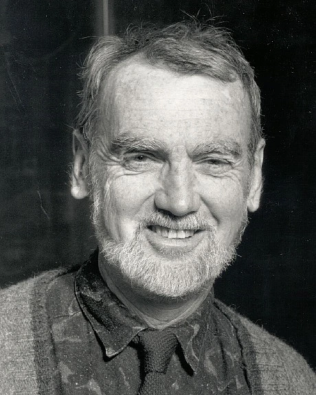

The goal of this groupe de travail is to get a better understanding of the mathematics that led Langlands to his conjectures and philosophy.
More concretely, we will follow how computing constant terms of Eisenstein series led Langlands to defining automorphic L-functions and formulating functoriality (see Langlands' short note).
This will involve learning about automorphic representations and their L-functions, but also looking at the motivating number theory questions coming from class field theory.
The amount of material on these topics and its difficulty is formidable. After a motivational talk, we will try to build up some background. Then, the goals will be to
- sketch how one proves the analytic continuation of the standard L-function;
- have some understanding of the spectral decomposition of Langlands and of the more modern proof of analytic continuation of Bernstein--Lapid;
- do a computation of the constant terms of Eisenstein series that would motivate Langlands' L-Group;
- see some applications.
We will, for instance, aim at understanding Arthur's notes on Automorphic representations and number theory, where he gives an introduction to the second and thrid bullet points, some papers in the book The Genesis of the Langlands Program, edited by Mueller, Shahidi, including Labesse's spectral decomposition paper, and an account of Bernstein--Lapid for GL(2).
We will supplement with details from other references, including
- Lecture notes on Automorphic L-Functions - Cogdell, Kim, Murty
- An Introduction to Automorphic Representations with a View Towards the Trace Formula - Getz, Hahn
- The Genesis of the Langlands Program - edited by Mueller, Shahidi (pdf only for personal use and in this seminar!)
- An Introduction to the Langlands Program - edited by Bernstein, Gelbart
- Automorphic Forms and Representations - Bump
- Spectral Decomposition and Eisenstein Series - Moeglin, Waldspurger
- Automorphic representations and number theory - Arthur (lecture notes)
- Potentially other more number-theory-oriented writings
Again, the topic can become extremely technical and difficult. The seminar should follow a philosophy of working out examples, motivating and synthesising material. We are also interested in applications and welcome such interludes.
The seminar will take place on Fridays at 14:00 in seminar room 3L15 at the Institut de Mathématique d'Orsay (exceptions will be announced).
The talks will last 2 hours or less, with a 10 minute break in between.
The following plan is subject to change.
Part I: We expect to learn about L-functions for GL(n) by the end of December, start of January.
Part II: After that we will learn about Eisenstein series, spectral decomposition, and constant terms.
Part III: Applications and L-functions coming from number theory.
The (preliminary) program is as follows:
- 9/10: Overview, motivation, allocation of talks (Radu Toma)
- 16/10: Tate's thesis I (Drimik Roy Chowdhury)
- 23/10: Tate's thesis II (Lucas Gerth)
- 30/10: Modular forms and their L-functions: Lecture I in Cogdell's Lectures on L-functions, Converse Theorems, and Functoriality for GL(n)
- 6/11: Automorphic forms: Lecture II in Cogdell's Lectures
- 13/11: Automorphic representations: Lecture III in Cogdell
- 20/11, 27/11: Some local representation theory
- 4/12, 11/12 (perhaps 18/12): Automorphic L-functions for GL(n)
Contact
Radu: radu.toma@universite-paris-saclay.fr
Drimik: drimik.royc@gmail.com